ts.plot(LakeHuron,
gpars = list(xlab = "Year",
ylab = "Level LakeHuron in feet",
lwd = 1.5))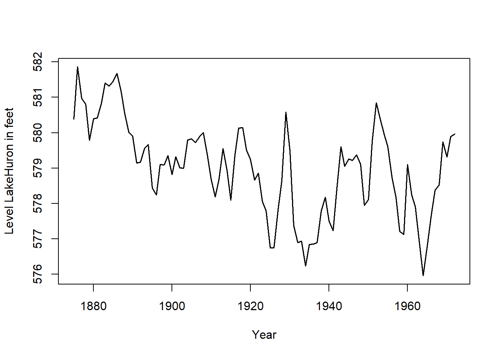
Una de las críticas que se les hace a estos métodos clásicos es que no se adaptan a lo largo del tiempo de forma natural: en los métodos clásicos, la tendencia y la estacionalidad se estiman una sola vez, usando todas las observaciones y todas con el mismo peso. Sin embargo, parece más lógico que las observaciones más recientes tengan un mayor peso en las predicciones futuras y que las estimaciones de la tendencia y estacionalidad se actualicen conforme se obtienen nuevas observaciones.
Una familia de modelos que aparecen la década de los años 60, intenta solucionar este problema. Se les conoce como técnicas de alisado exponencial, y se trata de técnicas bastante sencillas. Por este motivo, y a pesar de los años transcurridos, siguen siendo utilizadas en ciertas actividades de pronóstico, principalmente para realizar predicciones a corto plazo. Aplicar técnicas más sofisticadas no siempre se justifica.
El estudio de una serie temporal viene marcado por las diferentes metodologías empleadas en su tratamiento. La metodología que presentamos en este tema trata de explicar la trayectoria de una serie observada a través de la información contenida en los datos históricos, es decir, intenta capturar el comportamiento sistemático que muestra el pasado de la serie y en base a ello realizar predicciones respecto al futuro.
Los métodos de alisado exponencial se clasifican dependiendo de si la serie en estudio presenta o no estacionalidad. En este tema veremos los siguientes:
Si la serie no presenta estacionalidad:
Método de alisado exponencial simple: se usa cuando la tendencia se considera constante (localmente).
Método de alisado exponencial doble: se usa cuando la tendencia se considera lineal (localmente).
Método de Holt: se usa cuando la tendencia se considera lineal (localmente).
Si la serie presenta estacionalidad:
Método de Holt-Winters para modelos multiplicativos: se usa cuando la serie presenta estacionalidad, la tendencia se considera lineal localmente y ambas componentes se integran con esquema multiplicativo.
Método de Holt-Winters para modelos aditivos: se usa cuando la serie presenta estacionalidad, la tendencia se considera lineal localmente y ambas componentes se integran con esquema aditivo.
Es el método más sencillo de alisado exponencial. Se aplica cuando la serie en estudio no presenta estacionalidad y la tendencia de la serie se considera constante (localmente). Es decir, no se advierte un patrón claro de tendencia ni estacionalidad.
Un ejemplo ilustrativo sería la serie con el siguiente gráfico:
ts.plot(LakeHuron,
gpars = list(xlab = "Year",
ylab = "Level LakeHuron in feet",
lwd = 1.5))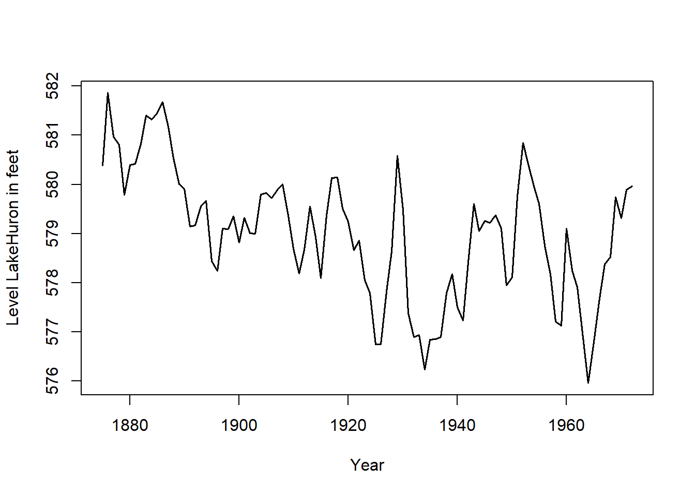
En este caso suponemos que la serie en estudio se expresa de la siguiente forma en cada instante:
\[ \left\{ \begin{array}{lll} x_t=T_t+I_t=a_t+I_t & & \text{modelo aditivo} \\ x_t=T_t\times I_t=a_t\times I_t & & \text{modelo multiplicativo} \end{array} \right. \]
donde hemos considerado que la componente de tendencia es constante en cada instante \(t\) (constante localmente): \(T_t=a_t\), con \(a_t\in \Bbb{R}.\)
Obsérvese que \(a_t\) representa la altura de la serie en cada instante \(t\) cuando realizamos su representación gráfica. Por este motivo se dice que \(a_t\) representa el nivel de la serie.
Al no disponer de componente estacional y suponer tendencia constante, nuestro objetivo se reduce a estimar el nivel de la serie en cada instante.
Como el resto de métodos de alisado exponencial, el alisado exponencial simple se caracteriza por dar más peso a las observaciones más recientes que a las observaciones más antiguas a la hora de realizar predicciones.
Dada una serie de observaciones, \(\{x_t\}_{t=1,2,...,n}\), en el alisado exponencial simple se obtiene otra serie denominada serie alisada (smoothing series), que denotaremos por \(\{A_t\}_{t=1,2,...,n}\), y que representa la estimación del nivel de la serie (\(a_t\)) en cada instante.
La serie alisada en cada instante \(t\) se obtiene a partir de la original mediante la siguiente expresión:
\[ A_t=\widehat{a}_t=\alpha x_t+\alpha (1-\alpha )x_{t-1}+\alpha (1-\alpha )^2x_{t-2}+...+\alpha (1-\alpha )^{t-1}x_1 \tag{6.1}\]
donde \(\alpha \in \left(0,1\right)\) se conoce como parámetro de alisado.
Es decir, la serie alisada se obtiene, en cada instante, como una media ponderada de las observaciones actual y anteriores de la serie original, donde las observaciones más recientes poseen más peso que las observaciones más antiguas. De hecho, el nombre de alisado exponencial se debe a que el peso de las observaciones decrece exponencialmente a medida que nos separamos del último instante observado (los valores de los pesos \(\alpha\), \(\alpha (1-\alpha )\), \(\alpha (1-\alpha )^2\), …, \(\alpha (1-\alpha)^{t-1}\) decrecen exponencialmente al ser \(\alpha \in \left(0,1\right)\)).
Otra de las características de los métodos de alisado exponencial es que las series alisadas se pueden obtener de manera recurrente, pudiendo actualizarse cada vez que disponemos de una nueva observación.
Teniendo en cuenta la expresión (Ecuación 6.1), la serie alisada en el instante \(t-1\), viene dada por:
\[ A_{t-1}=\alpha x_{t-1}+\alpha (1-\alpha )x_{t-2}+\alpha (1-\alpha )^2x_{t-3}+...+\alpha (1-\alpha )^{t-2}x_1 \]
de manera que:
\[ (1-\alpha )A_{t-1}=\alpha (1-\alpha )x_{t-1}+\alpha (1-\alpha )^2x_{t-2}+\alpha (1-\alpha )^3x_{t-3}+...+\alpha (1-\alpha )^{t-1}x_1 \]
y teniendo en cuenta nuevamente (Ecuación 6.1), se obtiene la siguiente expresión que permite calcular la serie alisada de forma recurrente:
\[ \boxed{ A_t = \alpha x_t + (1 - \alpha) A_{t-1} \qquad \forall t,\ \text{con}\ \alpha \in [0, 1] } \tag{6.2}\]
Es decir, la estimación del nivel en cada instante se puede obtener de forma recurrente:
\[ \boxed{ a_t = \alpha x_t + (1 - \alpha) a_{t-1} \qquad \forall t,\ \text{con}\ \alpha \in [0, 1] } \]
Nota: Haciendo abuso de la notación, hemos usado \(a_t\) en la serie alisada para denotar a la estimación del nivel. Además, consideraremos \(\alpha \in \left[0,1\right]\), permitiendo que \(\alpha\) tome los valores \(0\) y \(1\) en las fórmulas recurrentes para facilitar la interpretación del parámetro de alisado.
Para aplicar la fórmula recursiva anterior necesitamos disponer, por una parte, del valor del parámetro de alisado \(\alpha\), y por otra parte, del valor inicial de la serie alisada \(A_0\) (nivel inicial de la serie \(a_0\)).
Como valor inicial del nivel se suele usar el primer valor de la serie original, es decir:
\[ a_0=A_0=x_1 \]
o bien la media de las primeras observaciones, es decir:
\[ a_0=A_0=\frac{x_1+...+x_k}k\qquad \text{con }k\text{ pequeño} \]
Con respecto al parámetro de alisado \(\alpha\), comentar que si se utiliza un valor próximo a uno (\(\alpha \simeq 1\)) se da mucho peso a la última observación de la serie y muy poco peso a las pasadas. Por el contrario, si se utiliza un parámetro de alisado próximo a cero (\(\alpha \simeq 0\)), se le da mucho peso al conjunto de las observaciones pasadas y poco a la última observación (véase (Ecuación 6.2)).
Se ha comprobado empíricamente que un valor de \(\alpha =0.2\) suele dar buenos resultados. Sin embargo, la mayoría del software permite seleccionar el valor de \(\alpha\) que minimiza la suma de cuadrados de los errores de estimación. En R podremos seleccionar como parámetro de suavizado el valor de \(\alpha\) óptimo según dicho criterio (minimiza la suma de cuadrados de los errores de predicción para el instante siguiente).
Nuestro fin último es realizar predicciones de la serie para instantes futuros. Si disponemos de información de la serie hasta el instante \(T\), \(\{x_t\}_{t=1,2,...,T}\), las predicciones de la serie usando el método de alisado exponencial simple vienen dadas por:
\[ \boxed{ \begin{aligned} \widehat{x}_{T+1/T} &= a_T = A_T \\ \widehat{x}_{T+2/T} &= a_T = A_T \\ \vdots \\ \widehat{x}_{T+m/T} &= a_T = A_T \qquad \forall m = 1, 2, 3, \ldots \end{aligned} } \]
donde \(\widehat{x}_{T+m/T}\) denota el valor de la predicción en el instante \(T+m\) cuando disponemos de observaciones de la serie hasta el instante \(T\). Es decir, la predicción de la serie en el instante siguiente viene dada por la estimación del nivel en el último instante observado, o lo que es lo mismo, el valor de la serie alisada en el último instante observado. Y ésta también sería la predicción para instantes posteriores.
Sin embargo, a medida que disponemos de información nueva (nuevas observaciones), se calculan los valores de la serie alisada para los nuevos instantes y por tanto se revisan las predicciones de manera automática.
Podemos decir que el alisado exponencial simple estima en cada instante \(t\) el nivel de la serie (altura de la serie), y al suponer tendencia constante las predicciones vienen dadas sólo por el último nivel estimado. En el siguiente gráfico se muestra la serie original (negro), la serie ajustada (azul) usando Alisado Exponencial Simple y las predicciones (rojo) para futuros instantes.
SES <- HoltWinters(LakeHuron, beta = FALSE, gamma = FALSE)
ts.plot(LakeHuron, xlim = c(1875, 2000),
gpars = list(xlab = "Year",
ylab = "Level LakeHuron in feet",
lwd = 1.5))
lines(SES$fitted[ , 1], col = "blue", lwd = 1.2)
lines(predict(SES, n.ahead = 20), col = "red", lwd = 1.2)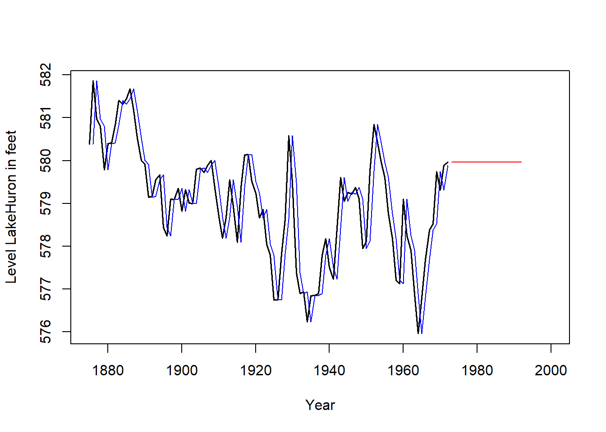
Este método de alisado se aplica cuando la serie en estudio no presenta estacionalidad y la tendencia de la serie se considera lineal (localmente).
Un ejemplo ilustrativo sería la serie con el siguiente gráfico:
library(ggplot2)
ts.plot(economics$uempmed, lwd = 1.5)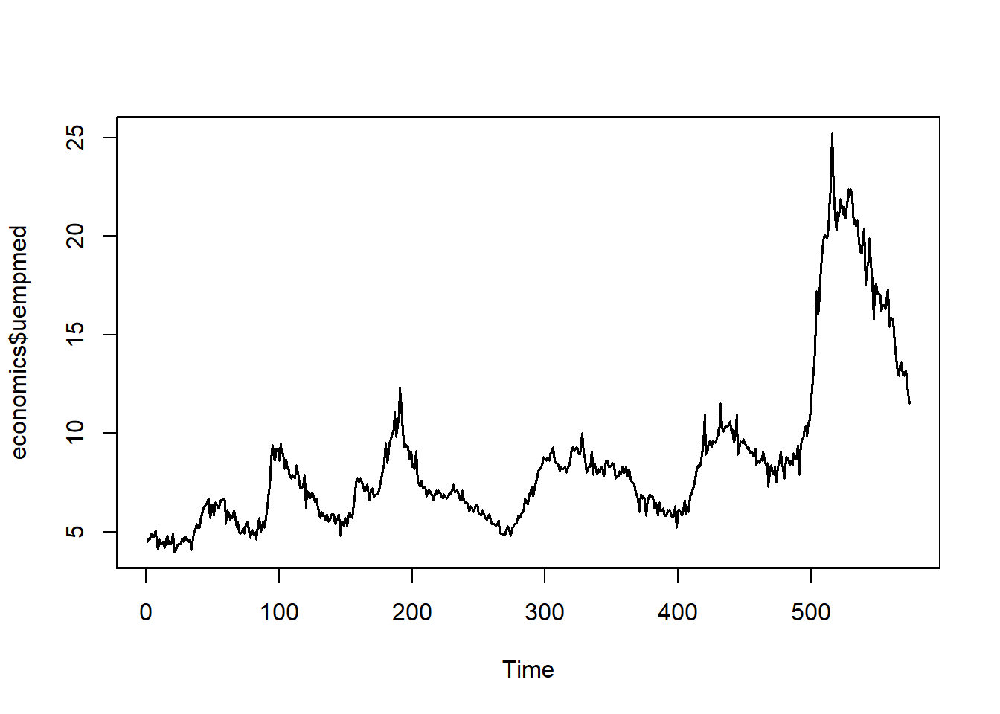
Esto es, suponemos que la serie en estudio se expresa de la siguiente forma en cada instante:
\[ \left\{ \begin{array}{lll} x_t=T_t+I_t=\left( a_t+b_t\cdot t\right) +I_t & & \text{modelo aditivo} \\ x_t=T_t\times I_t=\left( a_t+b_t\cdot t\right) \times I_t & & \text{modelo multiplicativo} \end{array} \right. \]
donde hemos considerado que la componente de tendencia es lineal en cada instante \(t\) (lineal localmente): \(T_t=a_t+b_t\cdot t\), con \(a_t\), \(b_t\in \Bbb{R}.\)
Obsérvese que \(a_t\) representa el nivel de la serie en cada instante \(t\), mientras que \(b_t\) representa la pendiente de la tendencia lineal en dicho instante.
Al no disponer de componente estacional y suponer tendencia localmente lineal, nuestro objetivo se reduce a estimar el nivel de la serie y la pendiente de la tendencia en cada instante.
El alisado exponencial doble consiste en realizar dos veces el proceso de alisado sobre la serie observada. Es decir, primero se aplica el proceso de alisado simple a la serie original y luego se aplica el proceso de alisado simple sobre la serie alisada previamente. Además, se utiliza el mismo parámetro de alisado en las dos etapas.
Dada una serie de observaciones, \(\{x_t\}_{t=1,2,...,n}\), en el alisado exponencial doble se obtienen de forma recursiva las dos series alisadas siguientes:
\[ \boxed{ \begin{aligned} A_t &= \alpha x_t + (1 - \alpha) A_{t-1} \\ A_t^{(2)} &= \alpha A_t + (1 - \alpha) A_{t-1}^{(2)} \end{aligned} } \]
donde \(\alpha \in \left[0,1\right]\) es el parámetro de alisado.
Las dos series obtenidas por alisado exponencial doble sirven para estimar, en cada instante \(t\), el nivel de la serie (\(a_t\)) y la pendiente de la tendencia (\(b_t\)). Se puede comprobar, con un desarrollo bastante laborioso, que estimaciones del nivel y de la pendiente vienen dadas por:
\[ \boxed{ \begin{aligned} a_t &= 2A_t - A_t^{(2)} \\ b_t &= \frac{\alpha}{1 - \alpha} \left( A_t - A_t^{(2)} \right) \end{aligned} } \]
Nota: haciendo abuso de la notación, hemos usado \(a_t\) y \(b_t\) en las series alisadas para denotar a las estimaciones del nivel y de la tendencia.
Para aplicar la fórmula recursiva anterior necesitamos disponer, por una parte, del valor del parámetro de alisado \(\alpha\), y por otra parte, de los valores iniciales de las series alisadas \(A_0\) y \(A_0^{(2)}\) (o equivalentemente de los valores inciales de nivel \(a_0\) y pendiente \(b_0\)). Como valores iniciales se suelen tomar la ordenada en el origen (\(a_0=cte)\) y la pendiente (\(b_0=pendiente\)) de la recta que ajusta a la serie por mínimos cuadrados usando todos los datos.
Con respecto al parámetro de alisado \(\alpha\), nuevamente podemos seleccionar aquel que minimice la suma de cuadrados de los errores de estimación.
Nuestro fin último es realizar predicciones de la serie para instantes futuros. Si disponemos de información de la serie hasta el instante \(T\), \(\{x_t\}_{t=1,2,...,T}\), las predicciones de la serie usando el método de alisado exponencial doble vienen dadas por:
\[ \boxed{ \begin{aligned} \widehat{x}_{T+1/T} &= a_T + b_T \cdot 1 \\ \widehat{x}_{T+2/T} &= a_T + b_T \cdot 2 \\ &\vdots \\ \widehat{x}_{T+m/T} &= a_T + b_T \cdot m \qquad \forall\, m = 1, 2, 3, \ldots \end{aligned} } \]
Es decir, la predicción de la serie en el instante siguiente viene dada por la estimación del nivel en el último instante observado más la estimación de la pendiente en el último instante observado.
Igual que en el alisado simple, a medida que disponemos de información nueva (nuevas observaciones), se calculan los valores de las series alisadas para los nuevos instantes y por tanto se revisan las predicciones de manera automática.
Este método de alisado se aplica en las mismas situaciones que el alisado exponencial doble, es decir, cuando la serie en estudio no presenta estacionalidad y la tendencia de la serie se considera lineal localmente.
Nuevamente, la serie en estudio se expresa de la siguiente forma en cada instante:
\[ \left\{ \begin{array}{lll} x_t=T_t+I_t=\left( a_t+b_t\cdot t\right) +I_t & & \text{modelo aditivo} \\ x_t=T_t\times I_t=\left( a_t+b_t\cdot t\right) \times I_t & & \text{modelo multiplicativo} \end{array} \right. \]
donde \(a_t\) representa el de la serie en cada instante \(t\), mientras que \(b_t\) representa la de la tendencia lineal en dicho instante.
La idea del método de Holt es similar al alisado exponencial doble: en cada instante \(t\), queremos estimar el nivel de la serie (\(a_t\)) y la pendiente de la tendencia (\(b_t\)). A diferencia del alisado exponencial doble, en el método de Holt se usan dos parámetros de alisado que denotaremos por \(\alpha \in \left[0,1\right]\) y \(\beta \in \left[0,1\right]\).
En el método de Holt, la estimación del nivel en el instante \(t\) viene dada por la siguiente serie alisada:
\[ \boxed{ a_t = \alpha x_t + (1 - \alpha)\left(a_{t-1} + b_{t-1}\right), } \]
es decir, se obtiene como una media ponderada entre la última observación y la suma (nivel + pendiente) del instante anterior.
Por otra parte, la estimación de la pendiente en el instante \(t\) viene dada por la siguiente serie alisada:
\[ \boxed{ b_t = \beta \left( a_t - a_{t-1} \right) + (1 - \beta) b_{t-1} } \]
Es decir, se obtiene como una media ponderada entre el último incremento del nivel y la pendiente en el instante anterior.
Para aplicar la fórmula recursiva anterior, necesitamos disponer de los parámetros de alisado \(\alpha \in [0, 1]\) y \(\beta \in [0, 1]\), así como de los valores iniciales de nivel (\(a_0\)) y pendiente (\(b_0\)).
Como valores iniciales se suelen tomar la ordenada en el origen (\(a_0 = \text{cte}\)) y la pendiente (\(b_0 = \text{pendiente}\)) de la recta que ajusta la serie por mínimos cuadrados usando todos los datos.
Con respecto a los parámetros de alisado, podemos seleccionar aquellos que minimicen la suma de cuadrados de los errores de estimación.
Las predicciones con el método de Holt se obtienen de forma análoga al alisado doble:
si disponemos de información de la serie hasta el instante \(T\), \(\{x_t\}_{t=1,2,\ldots,T}\),
las predicciones vienen dadas por:
\[ \boxed{ \begin{aligned} \widehat{x}_{T+1/T} &= a_T + b_T \cdot 1 \\ \widehat{x}_{T+2/T} &= a_T + b_T \cdot 2 \\ &\vdots \\ \widehat{x}_{T+m/T} &= a_T + b_T \cdot m \qquad \forall\, m = 1, 2, 3, \ldots \end{aligned} } \]
Como siempre, a medida que disponemos de nuevas observaciones, se calculan los valores de las series alisadas para los nuevos instantes, y por tanto se revisan las predicciones de manera automática.
En el siguiente gráfico se muestra la serie original (negro), la serie ajustada (azul) usando el método de Holt, y las predicciones (rojo) para futuros instantes.
Holt <- HoltWinters(economics$uempmed, gamma = FALSE)
ts.plot(economics$uempmed, lwd = 1.5)
lines(Holt$fitted[ , 1], col = "blue", lwd = 1.2)
lines(predict(Holt, n.ahead = 20), col = "red", lwd = 1.2)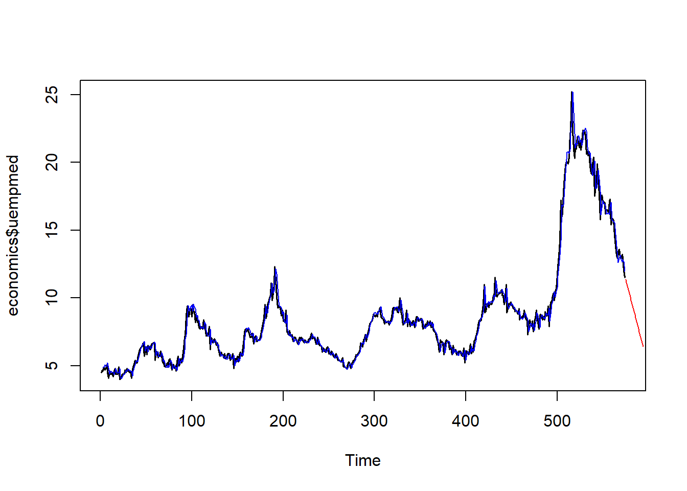
Este método de alisado es una variación del método de Holt que sirve para realizar predicciones en series que presentan estacionalidad. Además de la estacionalidad, se supone tendencia lineal (localmente) y que ambas componentes (tendencia y estacionalidad) se integran en la serie de forma multiplicativa.
Por tanto, la serie en estudio se expresa de la siguiente forma en cada instante:
\[ \begin{array}{lll} x_t=T_t\times S_t \times I_t=\left( a_t+b_t\cdot t\right) \times S_t \times I_t & & \text{ modelo multiplicativo} \end{array} \]
\[ \begin{array}{lll} x_t=T_t\times S_t+I_t=\left( a_t+b_t\cdot t\right) \times S_t+I_t & & \text{ modelo multiplicativo (mixto)} \end{array} \]
donde \(a_t\) representa el nivel de la serie en cada instante \(t\), \(b_t\) representa la pendiente de la tendencia lineal en dicho instante y \(S_t\) la componente estacional de la serie que supondremos de período \(L\).
Siguiendo la idea del método de Holt, en cada instante \(t\,\)necesitamos estimar el nivel de la serie (\(a_t\)), la pendiente de la tendencia (\(b_t\)) y el factor estacional (\(S_t\)). En este caso se usarán tres series alisadas y tres parámetros de alisado que denotaremos por \(\alpha \in \left[0,1\right]\), \(\beta \in \left[0,1\right]\) y \(\gamma \in \left[0,1\right]\).
En el método de Holt-Winters multiplicativo, la estimación del nivel en el instante \(t\) viene dada por la siguiente serie alisada:
\[ \boxed{ a_t = \alpha \frac{x_t}{S_{t-L}} + (1 - \alpha)\left(a_{t-1} + b_{t-1}\right) } \]
Es decir, se obtiene como una media ponderada entre la última observación desestacionalizada y la suma (nivel + pendiente) en el instante anterior.
Por otra parte, la estimación de la pendiente en el instante \(t\) viene dada por la siguiente serie alisada:
\[ \boxed{ b_t = \beta \left(a_t - a_{t-1}\right) + (1 - \beta) b_{t-1} } \]
Es decir, se obtiene como una media ponderada entre el último incremento del nivel y la pendiente en el instante anterior.
Finalmente, la estimación del factor estacional en el instante \(t\) viene dada por la siguiente serie alisada:
\[ \boxed{ S_t = \gamma \cdot \frac{x_t}{a_t} + (1 - \gamma) S_{t-L} } \]
Para aplicar la fórmula recursiva anterior necesitamos disponer de los parámetros de alisado \(\alpha \in \left[ 0,1\right]\), \(\beta \in \left[ 0,1\right]\) y \(\gamma \in \left[ 0,1\right]\), y de los valores inciales de nivel (\(a_0)\), pendiente (\(b_0)\), y factores estacionales (\(S_0\), \(S_{-1}\), …, \(S_{-L+1}\)). Como valores iniciales para el nivel y la pendiente (\(a_0\) y \(b_0\)) se suelen tomar la ordenada en el origen (\(a_0=cte\)) y la pendiente (\(b_0=pendiente\)) de la recta que ajusta a la serie desestacionalizada por mínimos cuadrados usando todos los datos, y como valores iniciales de los factores estacionales se suelen tomar los índices de variación estacional (IVE) obtenidos al desestacionalizar la serie (visto en análisis clásico).
Con respecto a los parámetros de alisado, podemos seleccionar aquellos que minimicen la suma de cuadrados de los errores de estimación.
Las predicciones con el método de Holt-Winters multiplicativo se obtienen de la siguiente forma: si disponemos de información de la serie hasta el instante \(T\), \(\{x_t\}_{t=1,2,...,T}\), las predicciones vienen dadas por
\[ \boxed{ \begin{aligned} \widehat{x}_{T+1/T} &= \left(a_T + b_T \cdot 1\right) \times S_{T+1-L} \\ \widehat{x}_{T+2/T} &= \left(a_T + b_T \cdot 2\right) \times S_{T+2-L} \\ &\vdots \\ \widehat{x}_{T+m/T} &= \left(a_T + b_T \cdot m\right) \times S_{T+m-L} \qquad \forall\, m = 1,2,\ldots,L \end{aligned} } \]
Como siempre, a medida que disponemos de nuevas observaciones, se calculan los valores de las series alisadas para los nuevos instantes y por tanto se revisan las predicciones de manera automática.
En el siguiente gráfico se muestra la serie original (negro), la serie ajustada (azul) usando Holt-Winters multiplicativo y las predicciones (rojo) para futuros instantes.
Holt_Winter_multip <- HoltWinters(AirPassengers, seasonal = "multiplicative")
forecasted_values1 <- predict(Holt_Winter_multip, n.ahead = 24)
extended_data1 <- ts(c(AirPassengers, forecasted_values1),
start = start(AirPassengers),
frequency = frequency(AirPassengers))
ts.plot(extended_data1, col = "red")
lines(AirPassengers, lwd = 1.5)
lines(Holt_Winter_multip$fitted[ , 1], col = "blue", lwd = 1.2)
lines(predict(Holt_Winter_multip, n.ahead = 24), col = "red", lwd = 1.2)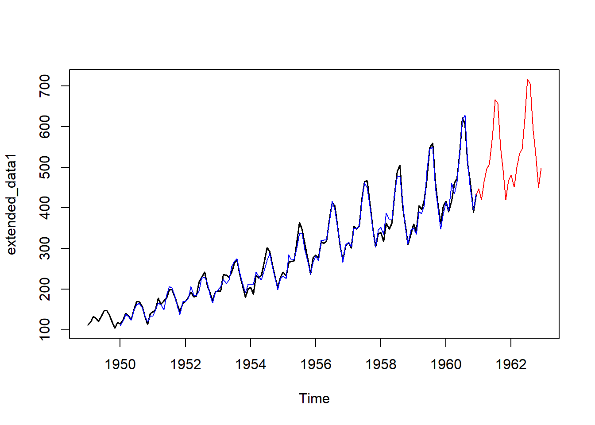
Este método de alisado se aplica en los mismos casos que el método anterior, salvo que los componentes de estacionalidad y tendencia se integran de forma aditiva. Por tanto, la serie en estudio se expresa de la siguiente forma en cada instante:
\[ x_t = T_t + S_t + I_t = (a_t + b_t \cdot t) + S_t + I_t \quad \text{modelo aditivo} \]
donde \(a_t\) representa el nivel de la serie en cada instante \(t\), \(b_t\) representa la pendiente de la tendencia lineal en dicho instante y \(S_t\) la componente estacional de la serie, que supondremos de período \(L\).
Siguiendo la idea del método anterior, en cada instante \(t\) necesitamos estimar el nivel de la serie (\(a_t\)), la pendiente de la tendencia (\(b_t\)) y el factor estacional (\(S_t\)).
En este caso se usarán tres series alisadas y tres parámetros de alisado que denotaremos por \(\alpha \in [0, 1]\), \(\beta \in [0, 1]\) y \(\gamma \in [0, 1]\).
En el método de Holt-Winters aditivo, la estimación del nivel en el instante \(t\) viene dada por la siguiente serie alisada:
\[ \boxed{ a_t = \alpha (x_t - S_{t-L}) + (1 - \alpha)(a_{t-1} + b_{t-1}) } \]
Es decir, se obtiene como una media ponderada de la última observación desestacionalizada y del valor de (nivel + pendiente) en el instante anterior.
Por otra parte, la estimación de la pendiente en el instante \(t\) viene dada por la siguiente serie alisada:
\[ \boxed{ b_t = \beta (a_t - a_{t-1}) + (1 - \beta)b_{t-1} } \]
Es decir, se obtiene como una media ponderada del último incremento de nivel y de la pendiente en el instante anterior.
Finalmente, la estimación del factor estacional en el instante \(t\) viene dada por la siguiente serie alisada:
\[ \boxed{ S_t = \gamma (x_t - a_t) + (1 - \gamma) S_{t-L} } \]
Para aplicar la fórmula recursiva anterior necesitamos disponer de los parámetros de alisado \(\alpha \in [0, 1]\), \(\beta \in [0, 1]\) y \(\gamma \in [0, 1]\), así como de los valores iniciales de nivel (\(a_0\)), pendiente (\(b_0\)) y factores estacionales (\(S_0\), \(S_{-1}\), …, \(S_{-L+1}\)).
Como valores iniciales para el nivel y la pendiente (\(a_0\) y \(b_0\)) se suelen tomar la ordenada en el origen (\(a_0 = \text{cte}\)) y la pendiente (\(b_0 = \text{pendiente}\)) de la recta que ajusta a la serie desestacionalizada por mínimos cuadrados usando todos los datos.
Como valores iniciales de los factores estacionales se suelen tomar los índices de variación estacional (IVE) obtenidos al desestacionalizar la serie (visto en análisis clásico).
Con respecto a los parámetros de alisado, podemos seleccionar aquellos que minimicen la suma de cuadrados de los errores de estimación.
Las predicciones con el método de Holt-Winters aditivo se obtienen de la siguiente forma:
si disponemos de información de la serie hasta el instante \(T\), \(\{x_t\}_{t=1,2,\ldots,T}\), las predicciones vienen dadas por:
\[ \boxed{ \begin{aligned} \widehat{x}_{T+1/T} &= (a_T + b_T \cdot 1) + S_{T+1-L} \\ \widehat{x}_{T+2/T} &= (a_T + b_T \cdot 2) + S_{T+2-L} \\ \vdots \\ \widehat{x}_{T+m/T} &= (a_T + b_T \cdot m) + S_{T+m-L} \qquad \forall m = 1, 2, \ldots, L \end{aligned} } \]
Como siempre, a medida que disponemos de nuevas observaciones, se calculan los valores de las series alisadas para los nuevos instantes y, por tanto, se revisan las predicciones de manera automática.
En el siguiente gráfico se muestra la serie original (negro), la serie ajustada (azul) usando Holt-Winters aditivo y las predicciones (rojo) para futuros instantes.
data <- log(AirPassengers)
Holt_Winter_aditivo <- HoltWinters(data, seasonal = "additive")
forecasted_values <- predict(Holt_Winter_aditivo, n.ahead = 24)
extended_data <- ts(c(data, forecasted_values), start = start(data), frequency = frequency(data))
ts.plot(extended_data, col = "red")
lines(log(AirPassengers), lwd = 1.5)
lines(Holt_Winter_aditivo$fitted[ , 1], col = "blue", lwd = 1.2)
lines(predict(Holt_Winter_aditivo, n.ahead = 24), col = "red", lwd = 1.2)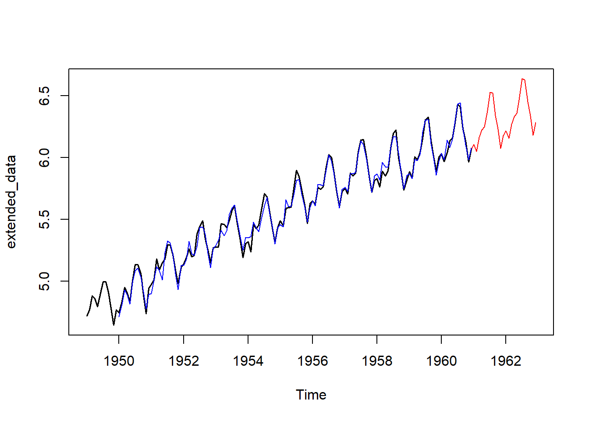
Para clarificar un poco el papel que tiene cada uno de los parámetros de alisado en los métodos vistos, podemos proporcinar la siguiente interpretación aproximada de los parámetros de alisado \(\alpha\), \(\beta\) y \(\gamma\):
Alfa (\(\alpha\)). Parámetro de suavizado exponencial que controla el peso relativo dado a las observaciones más recientes a la hora de estimar el nivel de la serie, en contraposición a la media global de la serie. Cuando alfa toma el valor 1, se utiliza exclusivamente la única observación más reciente; cuando alfa toma el valor 0, las observaciones antiguas cuentan con tanto peso como las recientes. Alfa se utiliza en todos los métodos de alisado.
Beta (\(\beta\)). Parámetro de suavizado exponencial que controla el peso relativo dado a las observaciones recientes a la hora de estimar la tendencia de la serie en el presente. Toma valores de 0 a 1. Los valores próximos a 1 indican un mayor peso para los valores recientes. Beta se utiliza sólo en los métodos de suavizado exponencial con una tendencia lineal localmente. No se utiliza en el alisado exponencial simple ni doble.
Gamma (\(\gamma\)). Parámetro de suavizado exponencial que controla el peso relativo dado a las observaciones recientes al estimar la estacionalidad del presente. Toma valores de 0 a 1. Los valores próximos a 1 corresponden a un mayor peso para las observaciones recientes. La gamma se utiliza en todos los métodos de suavizado exponencial con componente estacional. No se utiliza en los método de alisado simple, doble y de Holt.
Los métodos de alisado desarrollados en las secciones anteriores suponen una parte del total de métodos disponibles con ese mismo enfoque.
Las formas más usuales de variar y combinar las componentes de tendencia y estacionalidad se muestran en la siguiente tabla, dando lugar a un total de 9 métodos de alisado exponencial (fuente: Hyndman, R.J. and Athanasopoulos, G., 2021):
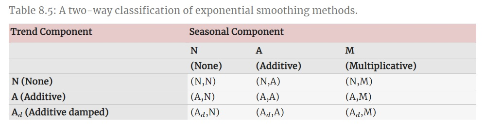
La mayoría de dichos métodos son los desarrollados anteriormente en este tema, incluyendo como novedad los casos de tendencia amortiguada (con parámetro de alisado adicional denotado por \(\phi\)), en los que la pendiente de la tendencia se ve amortiguada conforme aumenta el horizonte de predicción (\(h\)):
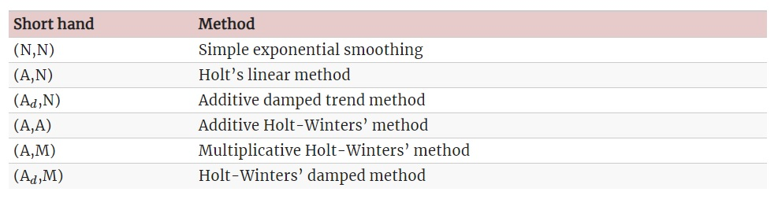
La siguiente tabla muestra las fórmulas recurrentes para aplicar cada uno de los nueve métodos de alisado mencionados arriba, así como la expresión para obtener las predicciones puntuales con horizonte \(h\) (fuente: Hyndman, R.J. and Athanasopoulos, G., 2021). Indicar que la notación empleada para dicha tabla difiere de la usada en nuestro caso.
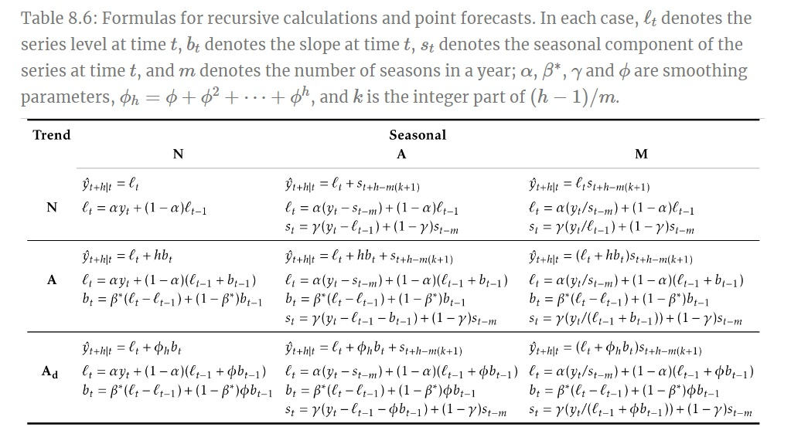
Cabe destacar, a modo resumen, que los métodos de alisado exponencial permiten obtener predicciones puntuales de la serie para instantes futuros. Aunque no se establece ninguna regla para el horizonte de predicción permitido, estos métodos tienen sentido para predicciones a corto plazo, siendo recomendable actualizar las fórmulas recurrentes conforme se dispone de nuevas observaciones de la serie.
En la próxima sección se introducen los modelos ETS, que suponen una extensión de los métodos de alisado exponencial.
Los modelos ETS, cuyas siglas se corresponden con (Error, Trend, Seasonal), representan los modelos estadísticos que subyacen bajo los métodos de alisado exponencial, dando lugar a las mismas estimaciones puntuales y permitiendo la obtención de intervalos de predicción.
Cada modelo ETS consiste en una ecuación que describe al proceso estocástico generador de la serie observada y, por otro lado, una o varias ecuaciones que describen cómo varían con el tiempo los estados (nivel, pendiente de la tendencia y estacionalidad). Por eso estos modelos se conocen como modelos de espacio de estados (state space models).
Por facilitar la distinción, hablaremos de métodos de alisado exponencial y modelos de espacio de estados. Para cada método de alisado existen dos modelos: uno con errores aditivos y otro con errores multiplicativos. Ambos proporcionan las mismas predicciones puntuales pero diferentes intervalos de predicción.
Notación: Usaremos la nomenclatura ETS(Error, Trend, Seasonal), donde:
Por ejemplo, ETS(A,N,N) representaría el modelo de espacio de estados del alisado exponencial simple con errores aditivos.
Veremos a continuación alguno de estos modelos en detalle.
Recordemos las ecuaciones vistas para el método de alisado exponencial simple:
\[ a_t=\alpha x_t+(1-\alpha )a_{t-1}\qquad (\text{ecuación suavizado}) \]
\[ \widehat{x}_{t+1/t}=a_t \qquad (\text{ecuación predicción}) \]
Obsérvese que la ecuación del suavizado también puede reescribirse como sigue:
\[ \begin{array}{l} a_t=\\ =a_{t-1} + \alpha (x_t-a_{t-1})\\ =a_{t-1} + \alpha (x_t-\widehat{x}_{t/t-1})\\ =a_{t-1} + \alpha e_t \end{array} \]
donde \(e_t=x_t-\widehat{x}_{t/t-1}=x_t-a_{t-1}\) es el residuo o error de predicción en el instante \(t\).
Por tanto, tendremos las dos siguientes ecuaciones. La primera describe a la serie observada y la segunda cómo varían con el tiempo los estados (en esta caso, el nivel de la serie):
\[ x_t=a_{t-1}+e_t \]
\[ a_t=a_{t-1} + \alpha e_t \]
A partir de las ecuaciones anteriores, el modelo estadístico ETS(A,N,N) se construye considerando una distribución probabilística para los errores. En este caso, y por analogía con otras metodologías estadísticas, supondremos que los residuos provienen de distribuciones \(N(0,\sigma^2)\) independientes.
Por tanto, el modelo ETS(A,N,N) viene dado por las ecuaciones:
\[ X_t=a_{t-1}+\epsilon_t \]
\[ a_t=a_{t-1} + \alpha \epsilon_t \] con \((\epsilon_t)\) un ruido blanco gaussiano, es decir \(\epsilon_t \sim N(0,\sigma^2)\) independientes para todo \(t\), donde \(X_t\) denota el proceso estocástico generador de la serie.
La interpretación del parámetro de alisado \(\alpha\) es el mismo que vimos. Es decir, si \(\alpha=0\), el nivel de la serie no cambia con el tiempo, y el modelo se reduce a:
\[ X_t=a_{0}+\epsilon_t \]
Y si \(\alpha=1\), para cada instante \(t\) se tiene que \(X_t=a_t\), y el modelo se reduce a un paseo aleatorio:
\[ X_t=a_t=a_{t-1} + \epsilon_t=X_{t-1}+\epsilon_t \]
Podemos simular varias trayectorias de este proceso en R mediante:
set.seed(123)
# parámetros
a0 <- 0
alpha <- 0.2
x0 <- a0
nsim <- 10
n <- 1000
# Proceso
e <- rnorm(n)
a <- a0 + c(0, cumsum(alpha*e))
x <- c(x0, a[1:n]+e)
dt <- 1/n
tiempos <- seq(from=0, to=1, by=dt)
colores <- rainbow(nsim)
plot(tiempos, x, ylim=c(-10,10), type = "l", lty = 1, col=colores[1])
for(i in 2:nsim){
e <- rnorm(n)
a <- c(a0, cumsum(alpha*e))
x <- c(a0, a[1:n]+e)
lines(tiempos, x, col=colores[i])
}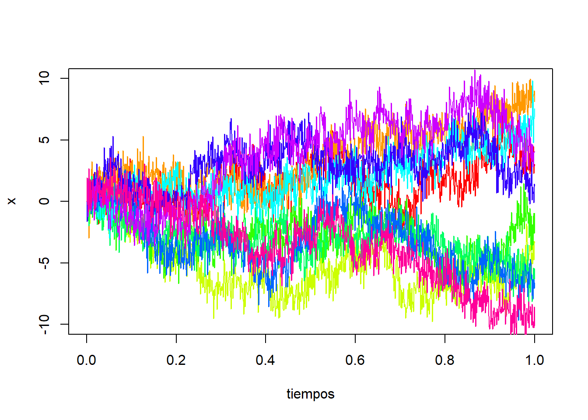
Para \(\alpha=0\), obtenemos un ruido blanco gaussiano:
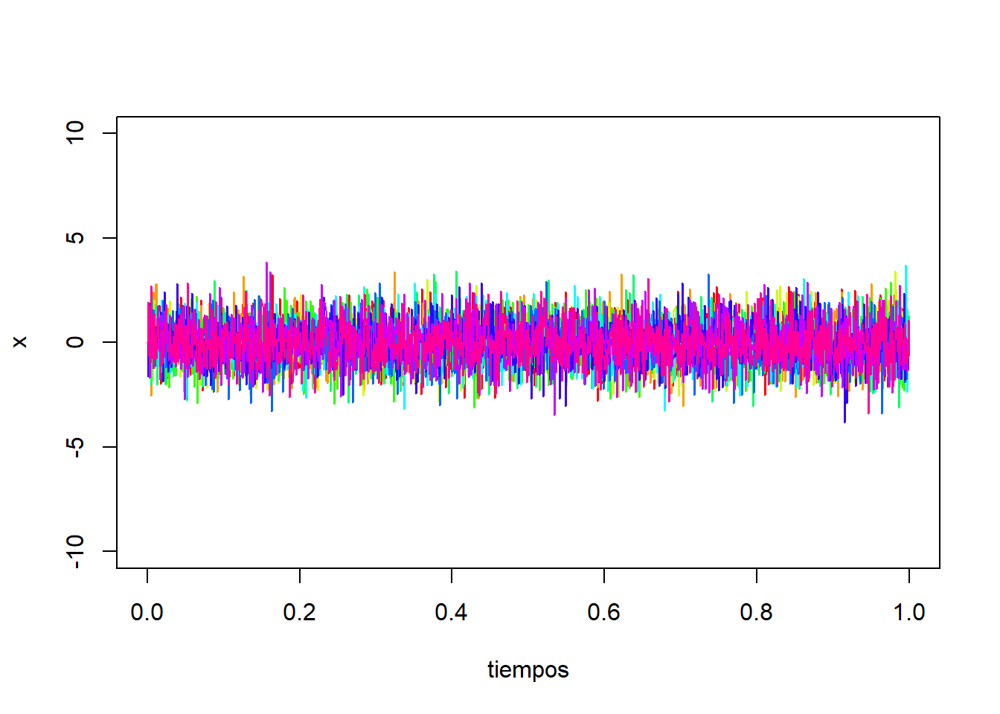
De forma análoga a lo visto anteriormente, podemos considerar el modelo con errores multiplicativos, definiendo los errores en términos relativos:
\[ e^{*}_t= \frac{x_t-\widehat{x}_{t/t-1}} {\widehat{x}_{t/t-1}} \]
Y sustituyendo \(\widehat{x}_{t/t-1}=a_{t-1}\) en la expresión anterior, tenemos:
\[ x_t= a_{t-1}+a_{t-1}e^{*}_t=a_{t-1}(1+e^{*}_t) \]
Obsérvese que los residuos usuales (\(e_t = x_t-\widehat{x}_{t/t-1}\)) y los relativos (\(e^{*}_t\)), se relacionan mediante:
\[ e_t = \widehat{x}_{t|t-1}e^{*}_t=a_{t-1}e^{*}_t \]
Por tanto, la ecuación de suavizado se reescribe:
\[ a_t=a_{t-1} + \alpha e_t \\ =a_{t-1} + \alpha a_{t-1}e^{*}_t \\ =a_{t-1}(1+\alpha e^{*}_t) \]
A partir de las ecuaciones anteriores, el modelo estadístico ETS(M,N,N) se construye considerando una distribución probabilística para los errores relativos. En este caso, supondremos que provienen de distribuciones \(N(0,\sigma^2)\) independientes.
Por tanto, el modelo ETS(M,N,N) viene dado por las ecuaciones:
\[ X_t=a_{t-1}(1+\epsilon_t) \]
\[ a_t=a_{t-1}(1+ \alpha \epsilon_t) \]
con \((\epsilon_t)\) un ruido blanco gaussiano, es decir, \(\epsilon_t \sim N(0,\sigma^2)\) independientes para todo \(t\), donde \(X_t\) denota el proceso estocástico generador de la serie. Podemos simular varias trayectorias de este proceso en R mediante:
set.seed(123)
# parámetros
a0 <- 1
alpha <- 0.2
x0 <- a0
nsim <- 10
n <- 1000
# Proceso
e <- rnorm(n, mean=0, sd=0.1)
a <- a0*c(1, cumprod(1 + alpha*e))
x <- c(x0, a[1:n]*(1+e))
dt <- 1/n
tiempos <- seq(from=0, to=1, by=dt)
colores <- rainbow(nsim)
plot(tiempos, x, ylim=c(0, 2), type = "l", lty = 1, col=colores[1])
for(i in 2:nsim){
e <- rnorm(n, mean=0, sd=0.1)
a <- c(a0, a0*cumprod(1 + alpha*e))
x <- c(x0, a[1:n]*(1+e))
lines(tiempos, x, col=colores[i])
}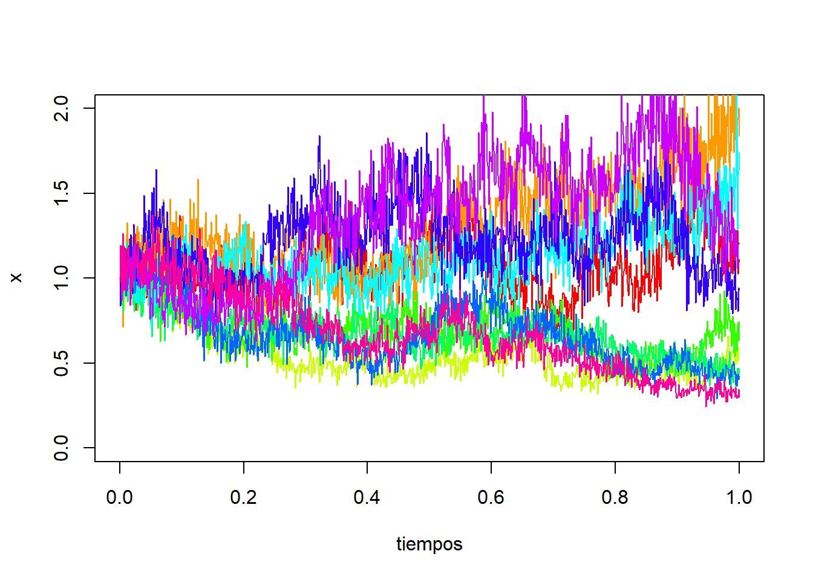
De forma análoga, se pueden desarrollar las ecuaciones que definen los diferentes modelos ETS según variemos el tipo de error, la tendencia y estacionalidad. Los resultados aparecen recogidos en las siguientes tablas (fuente: Hyndman, R.J. and Athanasopoulos, G., 2021):
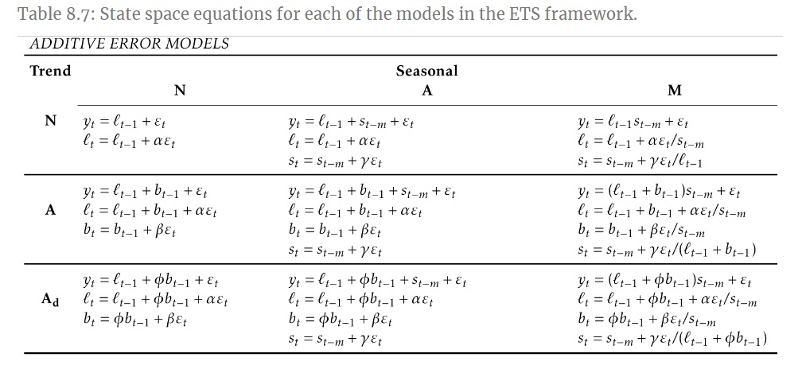
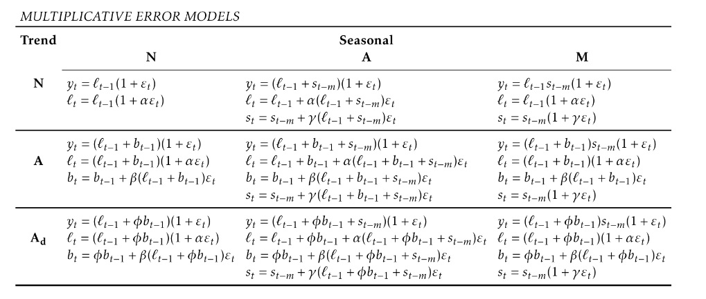
Para la estimación de los parámetros (parámetros de suavizado y estados iniciales) en los modelos ETS, se utiliza el método de máxima verosimilitud en lugar de minimizar la suma de los errores al cuadrado. Recordemos que la verosimilitud representa la probabilidad de que los datos se generen a partir del modelo especificado, y una verosimilitud alta indica un buen ajuste del modelo.
Destacar que, en el caso de modelos con errores aditivos y asumiendo distribución Normal para los errores, el método de máxima verosimilitud proporciona los mismos resultados que minimizar la suma de cuadrados de los errores. Sin embargo, para modelos con errores multiplicativos no es cierto.
El empleo de la estimación máximo-verosímil en los modelos ETS, permite el uso de criterios de información para la selección del modelo, como el AIC (Criterio de Información de Akaike) y el BIC (Criterio de Información Bayesiano). Estos criterios ayudan a determinar qué modelo ETS es el más apropiado para una serie temporal dada. Recordemos las definiciones del AIC y BIC:
\[ AIC = 2 \cdot k-2\cdot ln(L) \quad \quad BIC = k \cdot ln(n)-2 \cdot ln(L) \]
donde \(L\) es la verosimilitud del modelo,\(k\) es el número de parámetros estimados y \(n\) el número de datos. El modelo con el menor valor de AIC o BIC se considera el mejor ajuste.
Si disponemos de una serie \(\left\{x_t \right\}_{t=1,2,...,T}\), las predicciones con modelos ETS se obtienen iterando las ecuaciones del modelo para los instantes \(t=T+1,…,T+h\), siendo \(h\) el horizonte de predicción deseado, y asumiendo que \(\epsilon_t=0\) para \(t>T\).
Nota: Las predicciones puntuales obtenidas con los métodos de alisado exponencial coinciden con las obtenidas mediante el correspondiente modelo ETS (tanto en el caso de modelo con errores aditivos como multiplicativos), siempre que se usen los mismos parámetros de alisado. Además, la predicción puntual coincide con la media de la distribución para las predicciones, excepto en el caso de modelos con estacionalidad multiplicativa.
La ventaja principal de los modelos ETS frente a los métodos de alisado exponencial es que permiten la obtención de intervalos de predicción, puesto que se dispone de una expresión para las variables del proceso estocástico, \(\left\{X_t \right\}_{t=1,2,...,T}\), y se asume distribución Normal para los errores.
De forma resumida, para la mayoría de los modelos ETS, un intervalo de predicción tendrá la siguiente forma:
\[ (\text{Estimación puntual} \pm \text{Error de predicción}) = (\widehat{x}_{T+h/T} \pm c \cdot \sigma_h) \]
donde \(c\) es el cuantil de la distribución \(N(0,1)\) necesario según el nivel de confianza prefijado y \(\sigma_h^2\) es la varianza de la predicción con horizonte \(h\). Indicar que la expresión analítica de \(\sigma_h^2\) es complicada de obtener para algunos modelos ETS.
Veamos un ejemplo de aplicación de los modelos ETS para la serie “AirPassengers”. En el siguiente gráfico se muestra la serie original (negro), la serie ajustada (azul oscuro) usando el modelo ETS(M,A,M) y las predicciones (azul claro) para los dos años siguientes con los intervalos de prediccón (sobras grises).
library(forecast)
ETS_model <- ets(AirPassengers, model = "MAM")
plot(forecast(ETS_model, h = 24), lwd = 2)
lines(ETS_model$fitted, col = "blue", lwd = 1.5)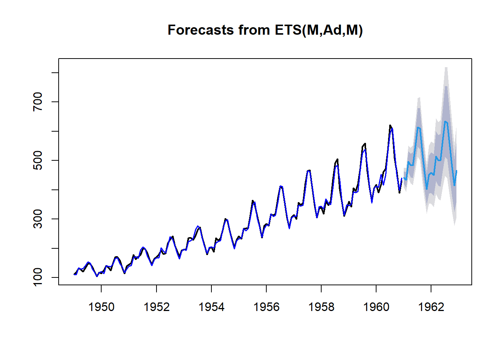